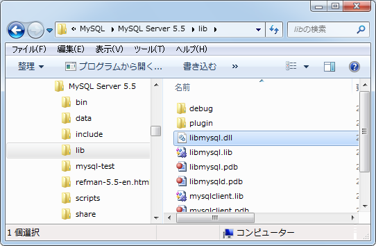

データベースの作成
rakeコマンドを使うことでデータベースの種類に関係なくデータベースを作成することができます。ここではSQLiteとMySQLを使用する場合でそれぞれデータベースを作成してみます。
1.SQLiteを使うアプリケーションでデータベース作成
2.MySQL Connector/C version 6.0.2 のダウンロード
3.MySQLを使うアプリケーションでデータベース作成
SQLiteを使うアプリケーションでデータベース作成
まずSQLiteを使用するRailsアプリケーションでデータベースを作成してみます。コマンドプロンプトを起動後、アプリケーションのルートに移動し次のようにコマンドを実行して下さい。
rake db:create
SQLiteではデータベース毎に1つのファイルが作成されます。データベース設定ファイルの「config/database.yml」ファイルで設定したデータベースファイルが作成されています。
development:
adapter: sqlite3
database: db/development.sqlite3
pool: 5
timeout: 5000
データベースファイル名として「db/development.sqlite3」が設定してありますので、実際に確認してみます。
このようにデータベースファイルを作成することができました。(実際には開発用の他にテスト用のデータベースも合わせて作成されています)。
MySQL Connector/C version 6.0.2 のダウンロード
次にMySQLを使用するRailsアプリケーションでデータベースを作成してみます。先程と同じようにコマンドプロンプトを起動後、アプリケーションのルートに移動し次のようにコマンドを実行して下さい。
rake db:create
するとまず次のようなエラーが発生しました。

ダイアログには「コンピュータに LIBMYSQL.dll がないため、プログラムを開始できません。この問題を解決するには、プログラムを再インストールしてみて下さい。」と表示されています。
そこでMySQLをインストールしたディレクトリを確認してみると「lib」ディレクトの中に「libmysql.dll」が入っていました。

「libmysql.dll」ファイルをコピーし、Rubyをインストールしたディレクトリの「bin」ディレクトリに置きました。
改めてrakeコマンドを実行してみます。すると今度は次のようなエラーが発生しました。
エラーメッセージには「rake aborted! Incorrect MySQL client library version! This gem was compiled for 6.0.0 but the client library is 5.5.9.」と表示されています。
そこでMySQLを利用するために以前にMySQL2パッケージをインストールした時に表示されたメッセージを見てみます。
ここには次のように記載されています。
You've installed the binary version of mysql2. It was built using MySQL Connector/C version 6.0.2. It's recommended to use the exact same version to avoid potential issues. At the time of building this gem, the necessary DLL files where available in the following download: http://dev.mysql.com/get/Downloads/Connector-C/mysql-connector-c-noinstall-6.0.2-win32.zip/from/pick And put lib\libmysql.dll file in your Ruby bin directory, for example C:\Ruby\bin
「MySQL Connector/C version 6.0.2」が必要なようです。そこで上記に記載されているURLへアクセスします。
今回はユーザー登録などは省略させて頂き、少し下へスクロールしたところにある「No thanks, just take me to the downloads!」と書かれたリンクをクリックします。
ダウンロードを行なうためのミラーサイト一覧が表示されますので、最寄のサイトをクリックして下さい。
「mysql-connector-c-noinstall-6.0.2-win32.zip」というファイルがダウンロードされますので任意の場所に保存して下さい。ダウンロードしたファイルは圧縮されていますので解凍して下さい。
「lib/libmysql.dll」ファイルをコピーし、Rubyをインストールしたディレクトリの「bin」ディレクトリに置きました。これで準備は完了です。
MySQLを使うアプリケーションでデータベース作成
では再度次のようにコマンドを実行して下さい。
rake db:create
今度は無事完了しました。MySQLの場合はデータベース設定ファイルの「config/database.yml」ファイルで設定したホスト名で動作しているMySQLで指定した名前のデータベースが作成されています。
development:
adapter: mysql2
encoding: utf8
reconnect: false
database: sample_mysql_development
pool: 5
username: railsuser
password: railspass
host: localhost
MySQLにログインし、データベースが作成されているか確認してみます。
開発用の「sample_mysql_development」データベースが作成されています。(SQLiteの場合と同じくテスト用のデータベースも同時に作成されています)。
どのように作成されたのかも確認しておきます。
CREATE DATABASE `sample_mysql_development` /*!40100 DEFAULT CHARACTER SET utf8 COLLATE utf8_unicode_ci */
文字コードも設定した設定ファイルで指定したUTF-8になっています。これでデータベースの作成は完了です。
( Written by Tatsuo Ikura )

著者 / TATSUO IKURA
初心者～中級者の方を対象としたプログラミング方法や開発環境の構築の解説を行うサイトの運営を行っています。